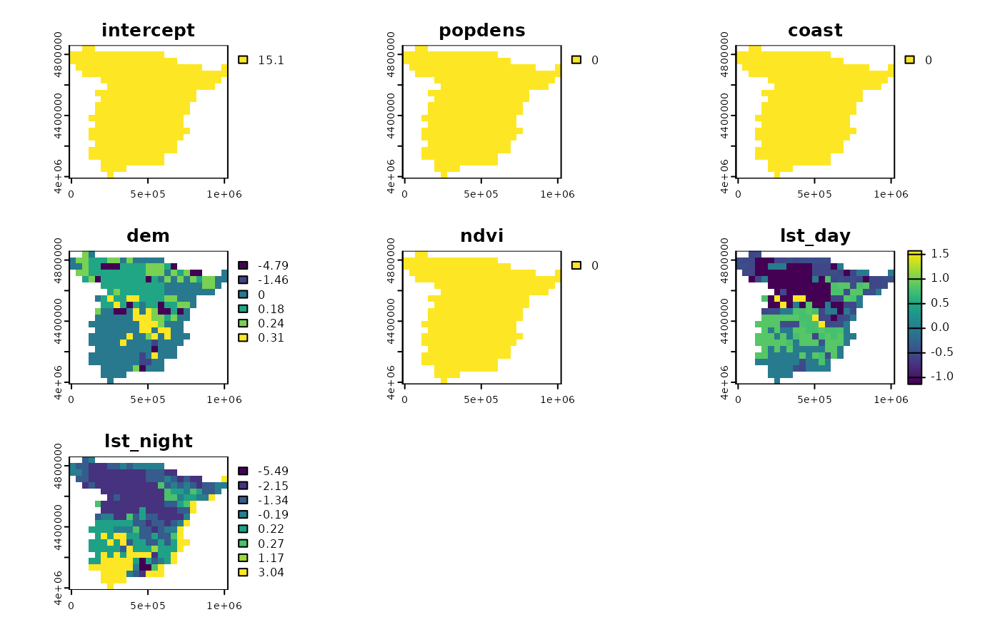

An introduction to spatial explanations
Jakub Nowosad
2024-11-20
An-introduction-to-spatial-explanations.RmdThe spatialexplain package provides model agnostic tools for exploring and explaining spatial machine learning models. The goal of this vignette is to show the basic workflow of its usage.1
Let’s start by attaching the necessary packages.
Next, we load two spatial datasets. The first one is a spatial vector point dataset with annual average air temperature measurements in Celsius for Spain in 2019. The second one is a raster dataset with predictors, such as population density (popdens), distance to the coast (coast), elevation (dem), a satellite-based Normalized Difference Vegetation Index (ndvi), and annual average composites of the Land Surface Temperature product for day (lst_day) and night (lst_night).
temp_train = read_sf("/vsicurl/https://github.com/Nowosad/IIIRqueR_workshop_materials/raw/refs/heads/main/data/temp_train.gpkg")
plot(temp_train)
predictors = rast("/vsicurl/https://github.com/Nowosad/IIIRqueR_workshop_materials/raw/refs/heads/main/data/predictors.tif")
plot(predictors, axes = FALSE)
Data preparation
To prepare the data for the model, we need to extract the values of the predictors at the locations of the temperature measurements with extract(), and then combine them with the temperature measurements with cbind().
temp = extract(predictors, temp_train, ID = FALSE)
temp_train = cbind(temp_train, temp)
head(temp_train)
#> Simple feature collection with 6 features and 7 fields
#> Geometry type: POINT
#> Dimension: XY
#> Bounding box: xmin: 825940.4 ymin: 4541533 xmax: 934920.7 ymax: 4630234
#> Projected CRS: ED50 / UTM zone 30N
#> temp popdens coast dem ndvi lst_day lst_night
#> 1 17.52610 0.000000 1.1263009 85.905403 0.3656146 24.37792 12.642557
#> 2 16.94795 1.211701 6.7432733 75.001259 0.3990190 28.13341 10.706681
#> 3 17.49233 5.681698 1.7549587 2.556155 0.1987631 25.76198 11.370279
#> 4 15.30838 4752.076660 45.7688789 256.110870 0.3861388 26.97013 8.315234
#> 5 16.56247 1789.268799 6.2198448 303.596924 0.5917153 22.47704 12.101181
#> 6 17.22139 13260.116211 0.7378924 12.070770 0.2349442 24.79462 13.021243
#> geom
#> 1 POINT (825940.4 4541533)
#> 2 POINT (849548.2 4563427)
#> 3 POINT (924683.3 4583884)
#> 4 POINT (902776.4 4630234)
#> 5 POINT (928394.5 4598097)
#> 6 POINT (934920.7 4595391)Regression model
Now, we can build models that predict the temperature based on the predictors. The first one is a regression model that predicts the temperature in Celsius for the whole area of the predictors raster. Many modeling methods and R tools can be used to build the model, but in this vignette, we use the rpart() function from the rpart package, which builds a regression tree model.
rpart_model = rpart(temp ~ ., data = st_drop_geometry(temp_train))
rpart_model
#> n= 195
#>
#> node), split, n, deviance, yval
#> * denotes terminal node
#>
#> 1) root 195 1546.773000 15.101570
#> 2) lst_night< 7.545278 70 286.239700 12.218960
#> 4) dem>=1271.976 9 15.529640 8.157678 *
#> 5) dem< 1271.976 61 100.362400 12.818160
#> 10) lst_day< 27.41322 52 52.454960 12.469420
#> 20) lst_night< 5.956942 35 21.516320 11.993630 *
#> 21) lst_night>=5.956942 17 6.703209 13.448980 *
#> 11) lst_day>=27.41322 9 5.042911 14.833110 *
#> 3) lst_night>=7.545278 125 353.141300 16.715830
#> 6) lst_night< 10.0302 69 92.904980 15.557040
#> 12) lst_day< 25.98267 24 13.758720 14.412790 *
#> 13) lst_day>=25.98267 45 30.963710 16.167310 *
#> 7) lst_night>=10.0302 56 53.423460 18.143620 *Next, we can use the explain() function from the DALEX package to create an explainer object for the model. Explainer is a universal model wrapper that can be used to explain any model with the same set of tools.2
regr_exp = explain(rpart_model,
data = st_drop_geometry(temp_train)[-1],
y = temp_train$temp)
#> Preparation of a new explainer is initiated
#> -> model label : rpart ( default )
#> -> data : 195 rows 6 cols
#> -> target variable : 195 values
#> -> predict function : yhat.rpart will be used ( default )
#> -> predicted values : No value for predict function target column. ( default )
#> -> model_info : package rpart , ver. 4.1.23 , task regression ( default )
#> -> predicted values : numerical, min = 8.157678 , mean = 15.10157 , max = 18.14362
#> -> residual function : difference between y and yhat ( default )
#> -> residuals : numerical, min = -3.09541 , mean = 1.512235e-15 , max = 2.473572
#> A new explainer has been created!This explainer can be used to check various instance and dataset-level explanations of the model, such as partial dependence plots and feature importance.3 However, these methods usually do not inform us about the spatial distribution of the model predictions. This is where the spatialexplain package comes in. It has a function called predict_spatial_parts() that can be used to calculate the attributions of the model (Break Down, SHAP, or Oscillations explanations) for each observation in the raster. The function requires the explainer object and the predictor’s raster. Additionally, as the calculation of the attributions can be computationally expensive, the function has a maxcell parameter that controls the number of cells in the raster that will be used to get the attributions.
regr_pps1 = predict_spatial_parts(regr_exp, predictors, maxcell = 500)
plot(regr_pps1)
By default, the predict_spatial_parts() function calculates the Break Down attributions. This method quantifies how each explanatory variable contributes to the model’s average prediction (the ‘intercept’) by assessing the impact on the prediction as values of each variable are fixed in sequence. Each of the cells in the raster is colored according to the contribution of the predictors to the model prediction. Here, we can see that the intercept of the model is 15.1 for the whole area, and that the variables popdens, coast, and ndvi do not have any influence on the model prediction. On the other hand, the variables dem, lst_day, and lst_night affect the model prediction differently, depending on the location. For example, the dem variable has a negative influence on the model prediction in the mountainous areas – the higher the elevation, the lower the temperature.
Classification model
The same workflow can be used for classification models. Here, we build a classification model that predicts if the temperature is cold or hot (below or above 17 degrees Celsius).
We use the rpart() function from the rpart package to build a classification tree model.
rpart_model_clas = rpart(temp ~ ., data = st_drop_geometry(temp_train))
rpart_model_clas
#> n= 195
#>
#> node), split, n, loss, yval, (yprob)
#> * denotes terminal node
#>
#> 1) root 195 57 cold (0.70769231 0.29230769)
#> 2) lst_night< 10.04327 140 8 cold (0.94285714 0.05714286) *
#> 3) lst_night>=10.04327 55 6 hot (0.10909091 0.89090909) *Next, we create an explainer object for the classification model – the code is almost the same as for the regression model, except that we use the classification model here.
clas_exp = explain(rpart_model_clas,
data = st_drop_geometry(temp_train)[-1],
y = temp_train$temp)
#> Preparation of a new explainer is initiated
#> -> model label : rpart ( default )
#> -> data : 195 rows 6 cols
#> -> target variable : 195 values
#> -> predict function : yhat.rpart will be used ( default )
#> -> predicted values : No value for predict function target column. ( default )
#> -> model_info : package rpart , ver. 4.1.23 , task classification ( default )
#> -> model_info : Model info detected classification task but 'y' is a factor . ( WARNING )
#> -> model_info : By deafult classification tasks supports only numercical 'y' parameter.
#> -> model_info : Consider changing to numerical vector with 0 and 1 values.
#> -> model_info : Otherwise I will not be able to calculate residuals or loss function.
#> -> predicted values : numerical, min = 0.05714286 , mean = 0.2923077 , max = 0.8909091
#> -> residual function : difference between y and yhat ( default )
#> Warning in Ops.factor(y, predict_function(model, data)): '-' not meaningful for
#> factors
#> -> residuals : numerical, min = NA , mean = NA , max = NA
#> A new explainer has been created!Finally, we can calculate the attributions for the classification model using the predict_spatial_parts() function.
clas_pps1 = predict_spatial_parts(clas_exp, predictors, maxcell = 500)
plot(clas_pps1)The classification model is much simpler in this case.4 The average prediction of the model is 0.292 for the whole area, meaning that the probability of the temperature being hot is 0.292. Then, only the lst_night variable has an impact on the model prediction, with the higher values of the variable increasing the probability of the temperature being hot. We can find such areas in the south of Spain and along its eastern coast.